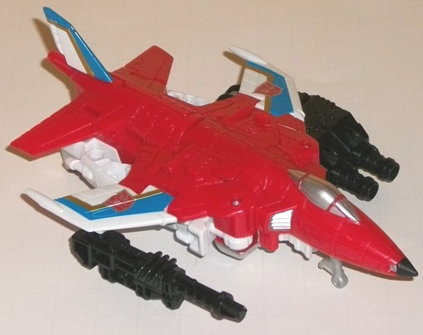
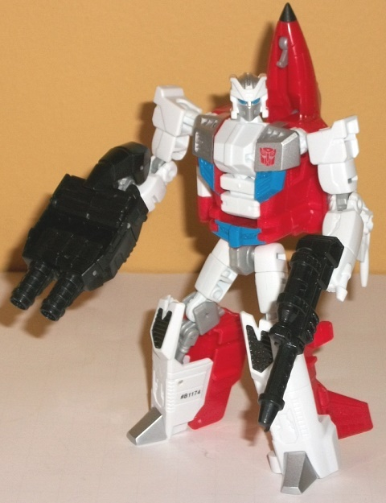
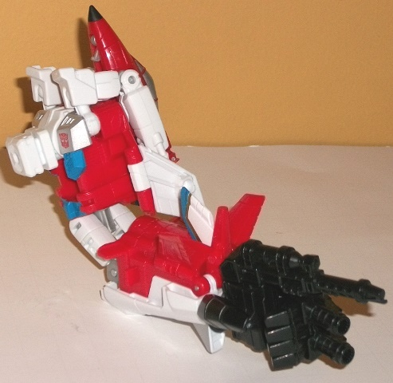
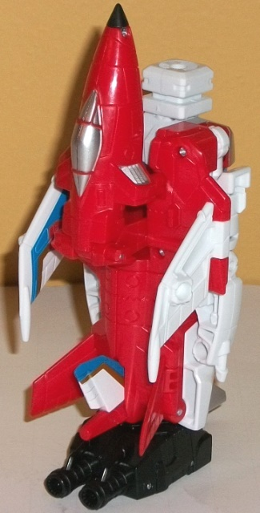

Allegiance
: Autobot
Size
: Deluxe
Difficulty of Transformation to Robot:
Easy
Difficulty of Transformation to Leg
:
Very Easy
Difficulty of Transformation to Arm
:
Very Easy
Color Scheme
: White, red, and some
black, silver, blue, metallic gold, and light milky gray
Rating
: 8.5


I guess Hasbro no longer
has the copyright to the name "Fireflight", so now this character is named
Firefly. This is fine with me; Firefly sounds better, anyways. Regardless,
Firefly's alt mode is a jet, and from most angles looks pretty decent.
His main wings are a bit too small proportionally, though the way they
sweep backwards from the main body is rather cool. The tailfins are also
fairly proportional and look nice, and the cockpit is well-proportioned
as well. However, like with most jetformers, Firefly has a bit of an undercarriage.
For the most part Hasbro does an admirable job hiding it from most angles,
but from a side-on angle it's quite obvious that Firefly's bottom side
sticks out below where it should-- particularly at the feet at the back,
with no thrusters visible back there. The hollow side of his hands also
sticks out quite blatantly from between his wings-- this toy's biggest
issue, in my opinion. Firefly's head is also a little obvious below his
nosecone. He does have a flip-out landing gear, though, which is always
nice (even if he doesn't have room for rear landing gear because of his
underside bulk). The mold detailing is quite good in this mode, with the
little lines one would expect on an aircraft all here. The colors certainly
fit his name, with a rather nice, semi-fiery shade of red being his main
color, with white contrasting with said red very well. The silver paint
on his nosecone and intake vents also looks great against the red, while
the excellently-done blue-and-gold striping on his wings helps to give
him a bit more uniqueness. (This said, the lines should have gone down
his entire wings instead of stopping where the plastic color changes color;
this makes his wings look even shorter/smaller then they are.) Firefly
has 2 5mm ports in this mode, one underneath each of his wings. As for
weaponry, he comes with the standard hand/foot/gun accessory that all Combiner
Wars deluxes have (Firefly's has two cannons poking out the front of his),
and a fairly skinny blaster. These and the rubbery nosecone tip are the
only black parts on Firefly, which helps them stand out a bit more-- whether
that's good or bad, I'll leave up to you.
Firefly's transformation
is pretty straightforward and typical for an Aerialbot, consisting of extending
out his legs, folding out his arms, and then folding back the wings and
nosecone. The nosecone and wings stay on his backpack quite well and out
of the way of movement; I consider them a minor extra because of this,
even if they stick out from the sides of Firefly's fairly skinny waist
a bit more than I'd like. The tailfins also stay directly behind his feet
pretty well and don't stick out too obviously, either. As far as proportions
go, he's NEARLY perfect, but there's a thin section of his shoulders that
extends out that looks a bit odd-- I wish those rotation points had either
been thicker or the arms had been brought slightly closer to the body.
The sculpting of Firefly is a bit more basic in this mode, though there
are still a few impressively-detailed parts like some mechanical bits on
his lower legs. His headsculpt is very well-done, and the triangular faceplate
and narrow eyes makes him look like he's ready to kick some tailpipe. Firefly's
color scheme becomes more white in this mode, though there's still certainly
enough red to contrast against most of it. The silver and blue on his chest
look particularly nice, bringing his whole color scheme together there.
That said, some paint apps on his all-white arms are desparately needed.
For articulation in this mode, Firefly can move at the neck (the balljoint
is exposed on the back of his head, allowing him to look up, unlike many
other deluxes), shoulders (at two points), elbows (at two points), waist
rotation, and movement at the hips (at two points) and knees. Given his
rather long feet, he's pretty well-balanced, and thus can pull off some
pretty dynamite poses. All of the joints on mine are of a pretty good tolerance,
to boot.


Firefly's arm mode is
pretty is a pretty basic conversion from his robot mode, consisting of
switching his head for a combiner port, putting his legs together, folding
his arms up, and attaching the hand accessory to the port at the end of
his combined legs. It generally works pretty well, with the jet bits forming
a nice "frame" for the shoulders while the waist and legs serve as the
elbow and lower arm. (The ports on the underside of his wings also make
great "storage" points for accessories in the gestalt form.) The only real
weakness here is that Firefly's arms are folded over the shoulder in a
way that's way too obvious for my taste, particularly since they're white
and thus stick out from the red plastic surrounding them. They don't mesh
with the surrounding bits well at all, and they're "held in place" by small
little tabs that fit into his fist holes-- they're not secure at all, though
thankfully his sturdy robot shoulder joints still keep those arms in placee.
Firefly has the usual arm articulation for a CW deluxe, with two points
of movement at the shoulders, two or three at the elbow depending on whether
his legs are facing forwards or backwards, rotation at the wrist, movement
at the thumb (at two points), and at the base of the four fingers on his
hand (all as one piece).
Firefly shares a similar
leg mode to the Aerialbots, in which it's his jet mode with the head rotated
in/combiner port rotated out, while the wings and nosecone are folded back
into their robot mode positions and the foot piece sticks into the back
end of the jet mode. The way the wings compress against the body helps
to make the mode look more solid, and I like that the nosecone helps to
cover up the combiner port at certain angles. That said, the hollow side
of his lower arms stick out from below the wings on the side a bit, just
like in his vehicle mode; otherwise this mode is very good. He has the
same articulation in this mode that all Combiner Wars deluxe leg-bots do;
at two points at the knees, and rotation at the foot peg.
Combiner Wars Firefly
isn't the best Combiner Wars mold, but he is the best
Aerialbot
mold. Yes, he does have the same kibble issues that most other Aerialbots
have, such as a fair amount of undercarriage junk in his jet mode and a
rather uninteresting transformation, but his undercarriage junk is a bit
more streamlined than on the other jet Aerialbots, and both of his limb
modes are pretty solid (obvious robot arms in his combiner arm mode not
withstanding). He's also got a very well-proportioned robot mode with excellent
articulation and a solid color scheme, and his plane bits tend to stay
out of the way in said robot mode better than on the other jet Aerialbots.
Recommended.
Pre-mission psych-screening report
by Rung, Autobot Psy-Ops Specialist
:
You would expect the recon expert of
the Aerialbots to be some sort of silent stealth jet, but Firefly breaks
that mold completely. Firefly has chosen bright red and brilliant white
for his colors, almost daring the Decepticons to spot him as he scouts
their activities. His "reverse camouflage" serves as a taunt to his opponents,
illustrating the massive confidence he has in his unrivaled speed and evasive
abilities. His daredevil flying style and hard-to-predict maneuvers make
him nearly impossible to catch, but hazardous to those sharing the same
patch of sky. In robot mode, he wields a photon displacer blaster that
affects sight by distorting light waves. With fellow Aerialbots, forms
Superion.
CONCLUSION: Cleared for mission.
HISTORY (extracted from compulsory
biographical download):
The history of Firefly is difficult
to track, not because his contributions to the Autobot cause are classified,
but because he's felt compelled to change his name twice during his career.
He has escaped twice from Decepticon prison units, changing his name following
both exits. Does he feel a "fresh start" keeps his service record clean?
Forms either an arm or a leg of Superion, the combined form of the Aerialbots.
Review by Beastbot